通信模式¶
本章的意图不是展示代码示例、讲解那些已经有大量教程的 API，而是用出色的图示来解释各类通信模式的工作原理。
点对点通信¶
点对点通信是最简单的通信类型，始终只有一个发送方和一个接收方。
例如，流水线并行执行的就是点对点通信：当前纵向阶段的激活被发送给下一个阶段。也就是说，当前的 GPU 执行 send，持有下一个阶段的 GPU 执行 recv。
PyTorch 提供了用于阻塞式点对点通信的 send 和 recv，以及用于非阻塞式点对点通信的 isend 和 irecv。更多信息。
单侧通信¶
集合通信和 send/recv 都是双侧的：每个参与的 rank 都要发起一个与之匹配的调用。单侧（one-sided，即 RMA）通信则允许一个 rank 直接写入或读取另一个 rank 的内存，而对方无需发起 recv。这种形式适合不规则访问——嵌入查找、权重拷贝、把词元路由到某一个专家——在这些场景下，让所有 rank 都加入一次 all-to-all 所搬运的数据，比算法本身需要的还要多。
从 PyTorch 2.14 开始，nccl2 把这一能力以窗口（window）的形式暴露出来，它建立在 NCCL 的 Put/Get API 之上。创建窗口本身仍然是集合操作——组内的每个 rank 都必须以相同的顺序调用它——并且截至 2.14，这些 Python 入口点是实验性的（dist._new_window、dist._supports_window）。当访问模式稀疏时使用它；当每个 rank 都参与时，仍然使用双侧的集合通信。
集合通信¶
集合通信包括：多个发送方与一个接收方、一个发送方与多个接收方，或者多个发送方与多个接收方。
在 PyTorch 的世界里，通常每个进程绑定一个加速器，因此各加速器通过进程组（process group）来执行集合通信。同一个进程可以属于多个进程组。
广播（Broadcast）¶
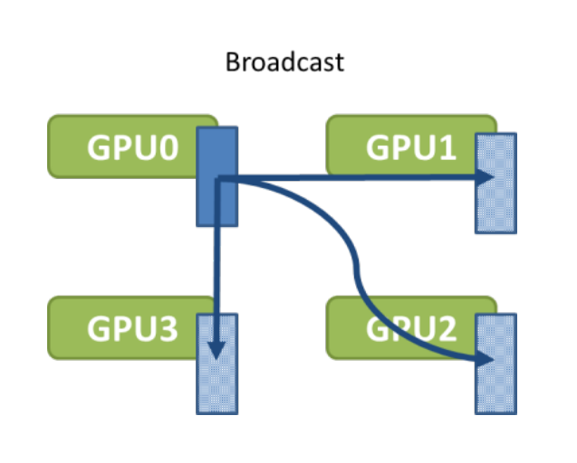
来源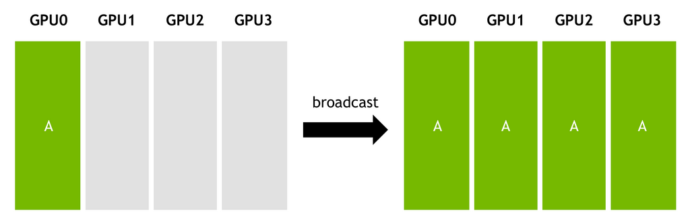
来源PyTorch API 示例：
dist.broadcast(tensor, src, group)：把 tensor 从 src 复制到所有其他进程。文档。
收集（Gather）¶
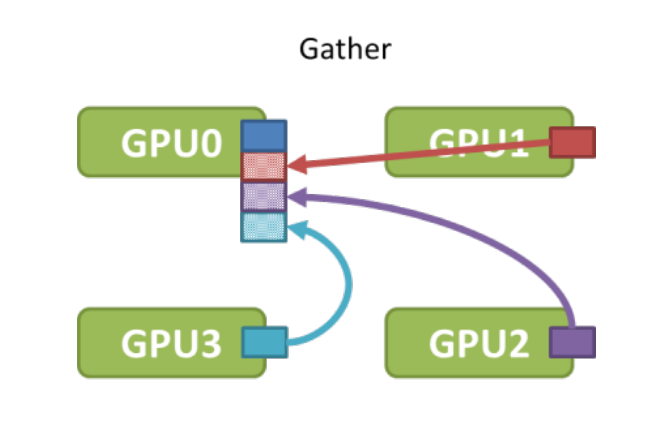
来源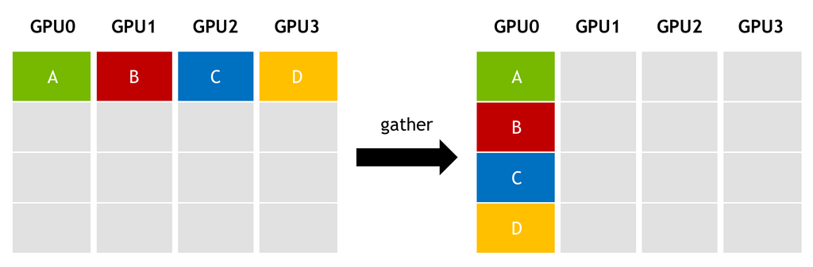
来源PyTorch API 示例：
dist.gather(tensor, gather_list, dst, group)：把组内每个进程的一份 tensor 复制到 dst 上的 gather_list 中。文档
全收集（All-gather）¶
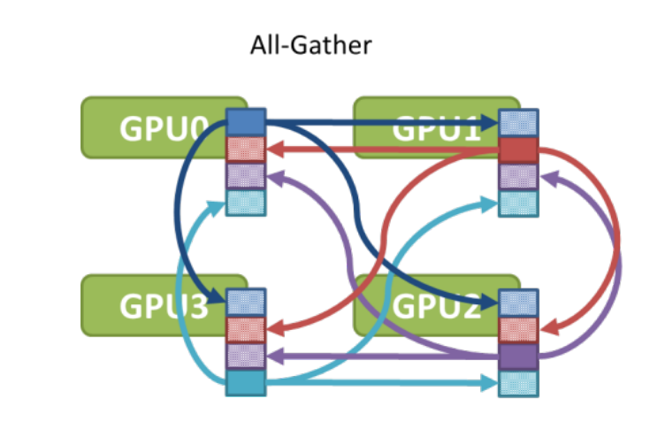
来源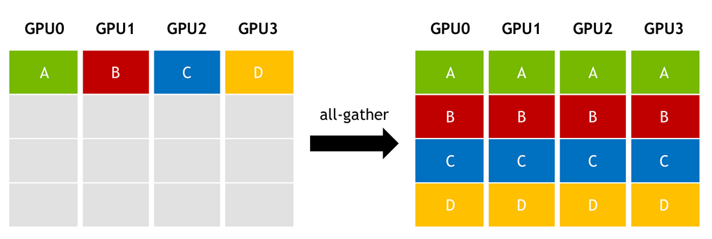
来源例如，ZeRO（DeepSpeed 和 FSDP）就使用这个集合通信，在 forward 和 backward 调用之前把分片的模型权重收集齐。
PyTorch API 示例：
dist.all_gather(tensor_list, tensor, group)：把所有进程的 tensor 复制到所有进程上的 tensor_list 中。文档
归约（Reduce）¶
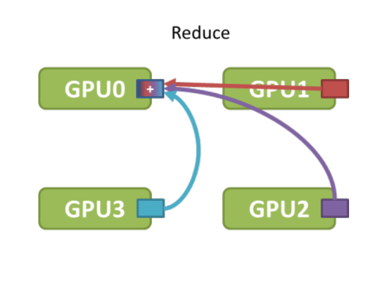
来源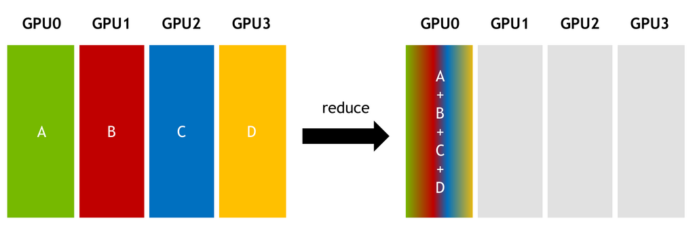
来源PyTorch API 示例：
dist.reduce(tensor, dst, op, group)：对每个 tensor 应用 op，并将结果存储在 dst 中。文档
PyTorch 支持多种归约操作，例如 avg、sum、product、min、max、band、bor、bxor 等——完整列表。
全归约（All-reduce）¶
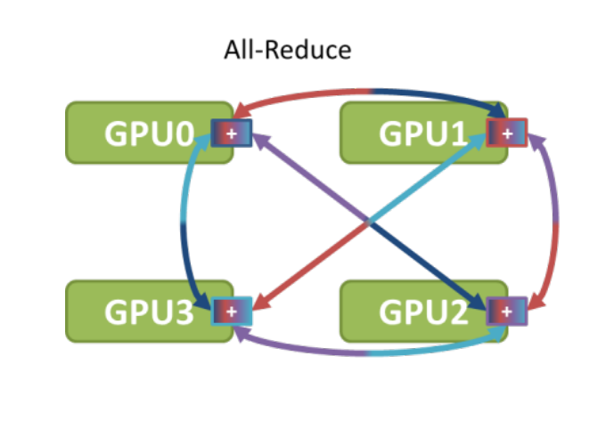
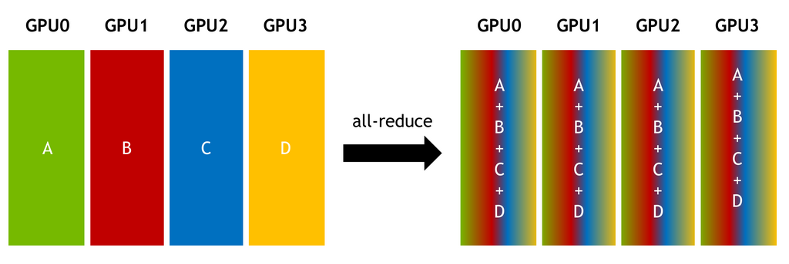
来源例如，DDP 使用该集合通信来归约所有参与 rank 之间的梯度。
PyTorch API 示例：
dist.all_reduce(tensor, op, group)：与 reduce 相同，但结果存储在所有进程中。文档
分散（Scatter）¶
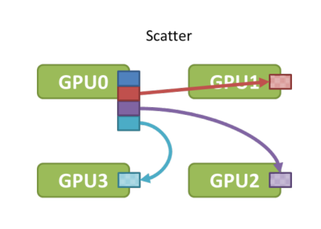
来源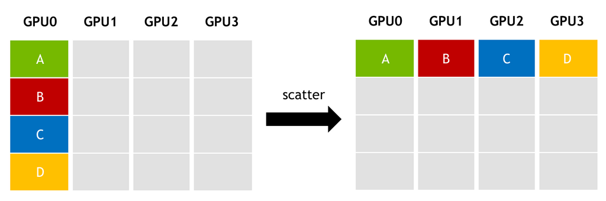
来源PyTorch API 示例：
dist.scatter(tensor, scatter_list, src, group)：把第 i 个张量 scatter_list[i] 复制给第 i 个进程。文档
归约分散（Reduce-Scatter）¶
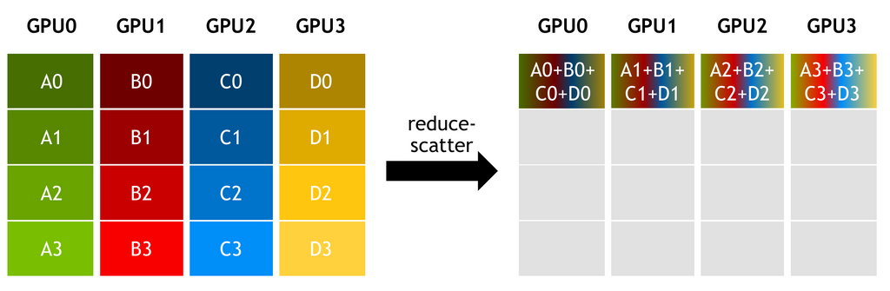
来源例如，ZeRO（DeepSpeed 和 FSDP）使用这个集合通信，在所有参与 rank 之间高效地归约梯度。注意，它并不是 all-reduce 的一个更廉价的替代品——每个 rank 最终只得到自己那一份归约后的分片，而不是完整结果。这正是 ZeRO 想要的，也正是它的数据搬运量只有一半的原因：环形 all-reduce 就是一次 reduce-scatter 后接一次 all-gather，去掉 all-gather 阶段，链路上的字节数就减半了。
PyTorch API 示例：
dist.reduce_scatter(output, input_list, op, group, async_op)：先归约，再把一组张量列表分散到组内所有进程。文档
全到全（All-to-all）¶
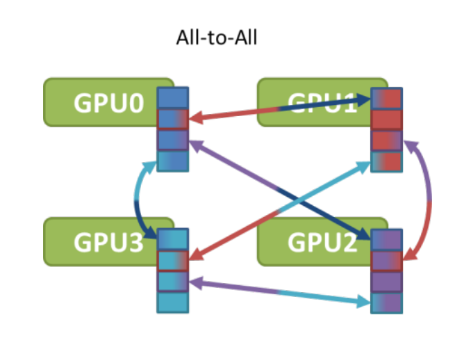
来源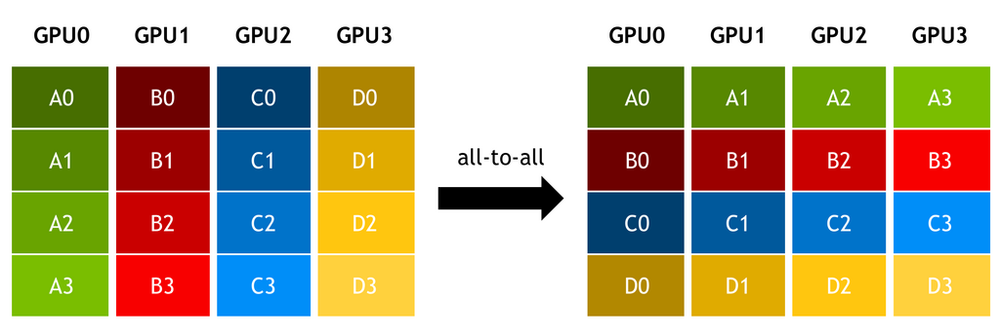
来源例如，DeepSpeed 序列并行在注意力计算中使用这个集合通信，MoE 的专家并行也使用它。
PyTorch API 示例：
dist.all_to_all(output_tensor_list, input_tensor_list, group)：把输入张量列表分散到组内所有进程，并在输出列表中返回收集到的张量列表。文档
算法¶
集合通信可以有多种不同的实现，nccl 这类通信库会根据内部启发式规则在不同算法之间切换，除非用户手动覆盖其选择。
环形¶
单向环上的广播¶
给定：
- N：要广播的字节数
- B：每条链路的带宽
- k：GPU 数量
朴素的广播每个步骤会发送 N/B。向 k 个 GPU 完成广播的总耗时为：(k-1)*N/B
下面是一个基于环形的广播的执行方式：
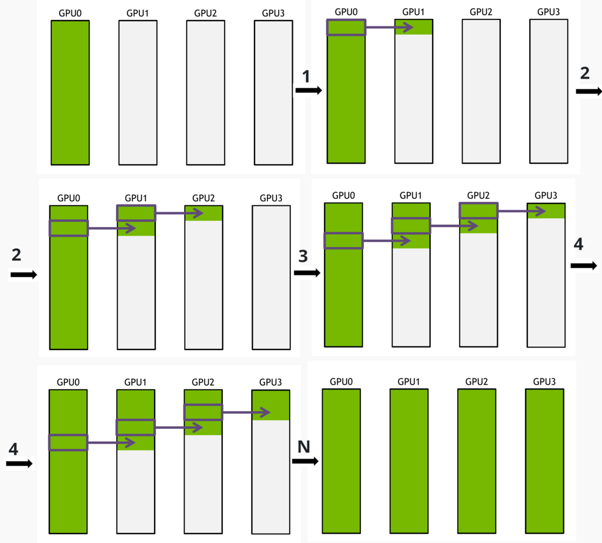
来源该算法把 N 拆分成 S 条消息
每个步骤发送 N/(S*B)，即每步发送的量是朴素算法每步的 S 分之一。
把 N 字节广播到 k 个 GPU 的总耗时为：
S*N/(S*B) + (k − 2)*N/(S*B) = N*(S + k − 2)/(S*B)
如果拆分出的消息非常小，使得 S>>k，那么 S + k − 2 约为 ~S，于是总耗时约为 N/B。
单向环上的全归约（All-reduce）¶
基于环形的 all-reduce 与广播的做法类似。消息被拆分成许多小消息，每个 GPU 向环中的下一个 GPU 发送一个小消息，与其他 GPU 并行进行。all-reduce 必须执行比 broadcast 多一倍（2x）的步骤，因为它还要做归约——所以消息需要在线上被完整发送两遍。
此外，还可以先把整个消息切分成若干块（chunk），让整个过程更加高效。下面是第一块的归约过程：
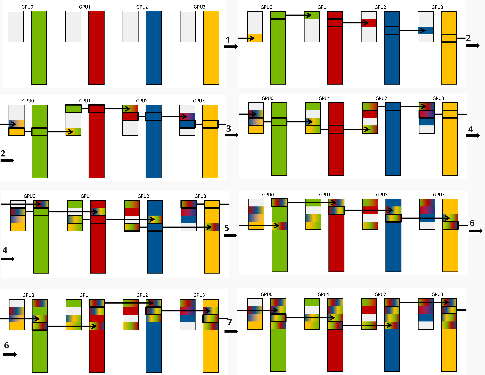
来源然后处理下一块，直到所有小消息都完成归约：
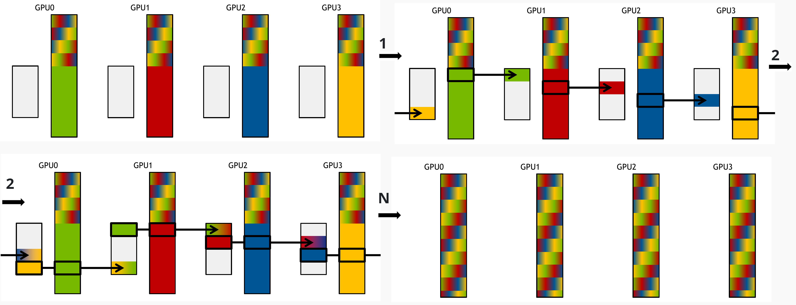
来源树形¶
环形算法把消息从邻居传给邻居，所以步数随 GPU 数量 k 增长，基础延迟也随之增长。树形算法则把消息向外扇出，跳数随 log(k) 增长。这就是两者在规模扩大时会互换优劣的原因：环形保持更高的峰值带宽，树形保持更低的基础延迟，对于固定大小的消息，k 足够大时树形就成了两者中更快的那个。
单棵二叉树会浪费一半的机器：一半节点是叶子，而叶子只接收不发送，其对外带宽始终得不到利用。因此 NCCL 会构建一棵双二叉树（double binary tree）——在同样的这批 GPU 上建两棵树，其排布保证没有节点在两棵树中都是内部节点，并且在两棵树中都是叶子的节点至多只有一个。两棵树同时承载流量，从而恢复了全部带宽。当节点数为偶数时，第二棵树是第一棵树的镜像；为奇数时，则是错开一位。
关于 NCCL 如何在环形与树形之间做选择，以及如何查看或手动覆盖这一选择，见 NCCL_ALGO。
协议¶
算法决定谁向谁发送什么。与算法正交的是，协议决定每次这样的传输如何同步，它对性能的影响与算法同样大。NCCL 有三种协议——这就是 NCCL_ALGO 所展示的 Algo NVLS proto SIMPLE 行中的 proto 部分。
下表各列按每跳延迟从低到高排列，而带宽利用率恰好也是从低到高：
| 属性 | LL | LL128 | Simple |
|---|---|---|---|
| 设计目标 | 低延迟 | 低延迟且高带宽 | 高带宽 |
| 同步方式 | 基于标志位 | 基于标志位 | 内存栅栏 |
| 每单元有效载荷 | 4B 数据 + 4B 标志 | 120B 数据 + 8B 标志 | 大数据块 |
| 带宽利用率 | 峰值的 25-50% | 峰值的 ~95% | 接近峰值 |
| 每跳延迟 | ~1µs | ~2µs | ~6µs |
来源：
- Demystifying NCCL: An In-depth Analysis of GPU Communication Protocols and Algorithms（2025），Table I。
Simple 发送大块数据，并用内存栅栏保证接收方看到的是一个完整的块。这能达到接近峰值的带宽，但栅栏的开销会主导任何小消息的成本。LL 去掉了栅栏：它把 4 字节数据与一个 4 字节标志配对，并把这 8 个字节作为一次原子写入，因此标志一到达，接收方就可以继续。代价是暂存缓冲区必须位于主机内存中，CPU 才能轮询那个标志，这就排除了 GPUDirect RDMA，并把 LL 限制在峰值的 25-50%——在只在乎延迟时这还可以接受，其他场合就很浪费。
LL128 保留了标志技巧，但采用 128 字节粒度，每 120 字节数据配一个 8 字节标志，约 95% 的峰值带宽正是由此而来。代价是一项硬件要求：这些 128 字节的写入绝不能被互联拆分或重排，在无法保证这一点的地方——某些 PCIe 路径——NCCL 会禁用 LL128，而不承担数据损坏的风险。所以你在 NVLink 系统上看到的就是它，而它的强项在于节点内。走网络时，每 128 字节一次的同步会在一次大传输上变成数百万次小操作，于是 Simple 重新占优。
更多指南¶
下面是一些带有精美图示的补充指南：
NCCL 专属：
- Demystifying NCCL: An In-depth Analysis of GPU Communication Protocols and Algorithms（2025）——这篇论文对 NCCL 做了全面分析，重点研究它的通信协议变体（Simple、LL 和 LL128）、支配节点内和节点间数据移动的机制，以及基于环形和树形的集合通信算法。